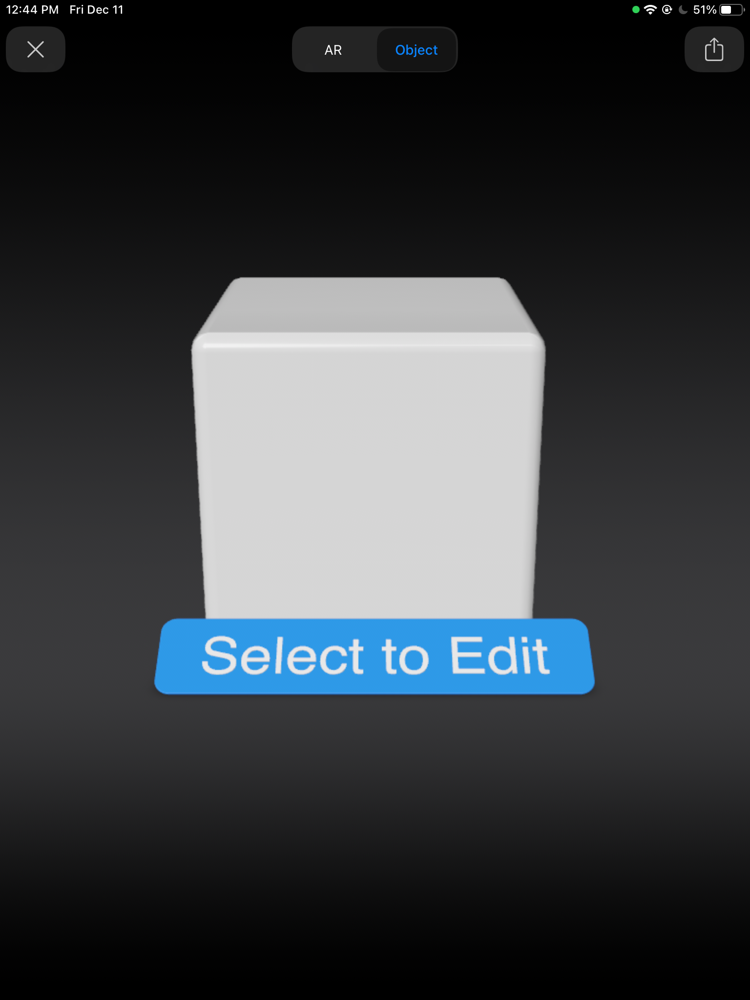
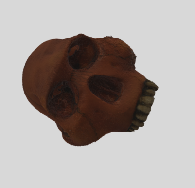

With iOS 12, you can place 3D objects in the real world using AR Quick Look, powered by ARKit 2. Tap any of the 3D models below on a device running iOS 12 to view the scene and place it in AR. Or click a model on Mac to download the realitycomposer file.
Now to try a basic multiscene realitycomposer file. tap cube to change scene
Now to try the skulls multiscene realitycomposer file
Christmas Card Test